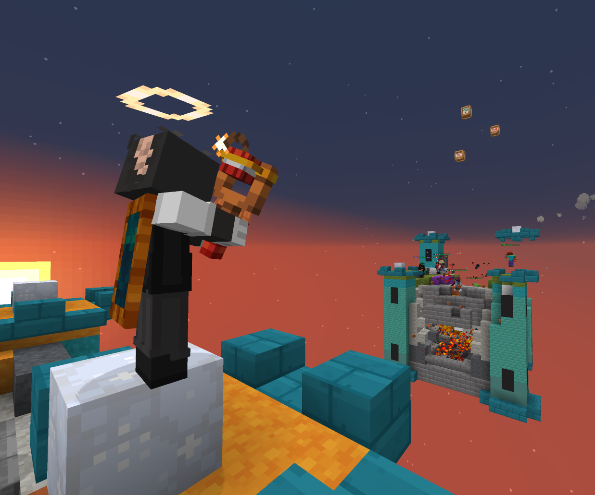
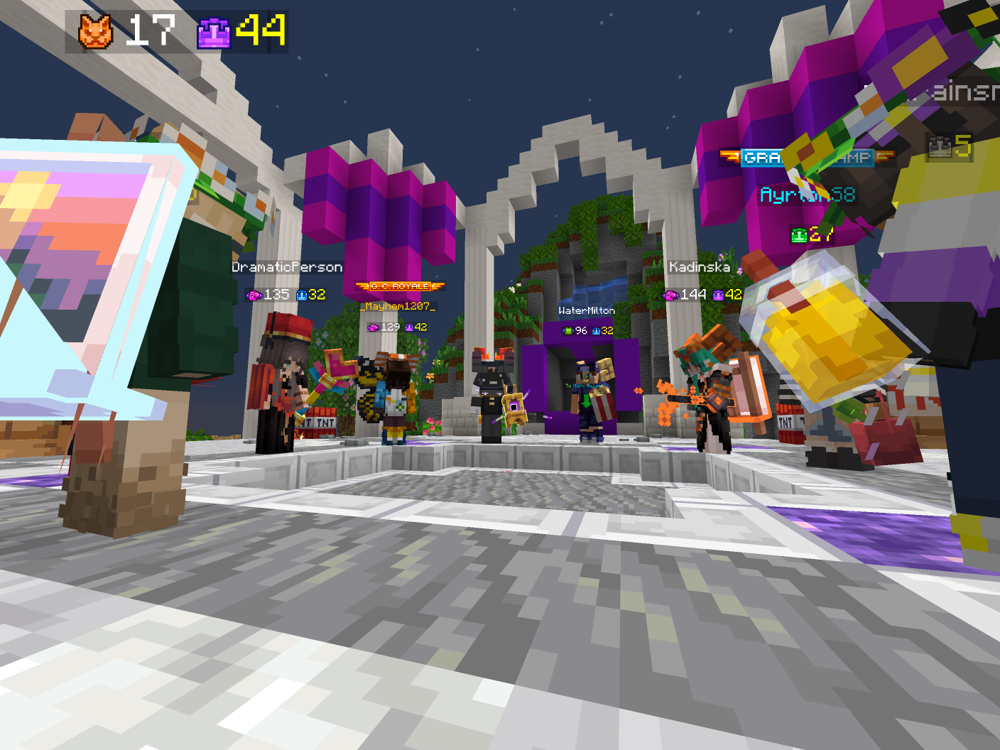
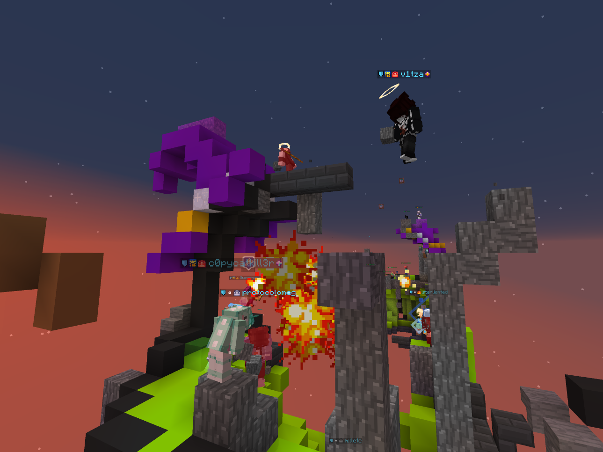

Passion of Dynaball
Dynaball, a PvP party game played by two teams of eight (roughly) go head to head with mainly unique method; Shooting a handful of TNT with a slingshot. The objective of this game is simple; survive till the end!
A fan made MCCI website related to Dynaball

Dynaball, a PvP party game played by two teams of eight (roughly) go head to head with mainly unique method; Shooting a handful of TNT with a slingshot. The objective of this game is simple; survive till the end!

Dynaball is not only about competitive game. It is about something subtle you can find among those players; generosity and caring. Since Dynaball is known to be less 'competitive' and blood thirst, Dynaball is just silly shooting explosives for fun!

Dynaball requires variour of skills to conquer the game. Aside of shooting TNTs, unique gadgets are present to be used strategically in every situations. Blocks dropped by explosions to restructure your map and play defend, and many more!